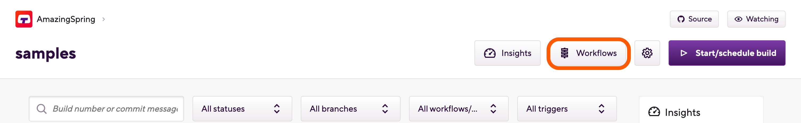

Using encrypted files in your builds
You can use encrypted files on Bitrise, easily. After encrypting the file on your computer, upload it to the Generic File Storage and use the Decrypt file Step or your own custom decrypting solution to decrypt it when you need it.
You can use encrypted files on Bitrise, easily and securely. All you need to do is encrypt the file on your computer, upload it to the Generic File Storage and use the Decrypt file Step or your own custom decrypting solution to decrypt it when you need it.
GPG encryption
Please note that the Decrypt file Step only decrypts files encrypted with GPG. If you use other encryption software, you will not be able to decrypt files using the Step. You can, of course, set up your own decryption solution in a Script Step.
Encrypting your files
In this example, we’ll use the pwgen password generator tool and GPG as the encryption software to encrypt a file.
-
Open a Terminal/Command Line.
-
Create a 32 character passphrase for encryption.
Keep the passphrase
You will need this passphrase to decrypt the file on Bitrise.
pwgen -s 32 1
-
Encrypt your file. In this example, the file is called
my_secret_file.gpg -c my_secret_file
Optionally, you can encrypt your file(s) in a non-interactive way.
gpg --batch --passphrase <passphrase> -c my_secret_file
Decrypting and downloading your files during a build
After you successfully encrypted a file, you need to upload it to Bitrise and you need to be able to decrypt it during the build. In this procedure, we'll use the Decrypt file Step to decrypt the file.
GPG encryption
Please note that the Decrypt file Step only decrypts files encrypted with GPG. If you use other encryption software, you will not be able to decrypt files using the Step. You can, of course, set up your own decryption solution in a Script Step.
-
Open your app on Bitrise.
-
Click the button on the main page.
 -
Go to the Secrets tab, and add your decryption passphrase as a Secret.
-
Upload the file to the Generic File Storage on Bitrise.
-
In the Generic File Storage, copy the Environment Variable (Env Var) under the name of the uploaded file. This Env Var stores the download URL for the file.
-
Go to the Workflows tab.
-
Select a Workflow from the dropdown menu.
-
Add the Decrypt file Step to your Workflow.
-
Paste the Env Var copied from the Generic File Storage to the Encrypted file path input.
-
In the Output file path input, specify the path where you want to place the decrypted file. Subsequent Steps will be able to access the file at this path.
Using an Env Var as the input value
You can store the filepath in an App Env Var instead of specifying it directly for the input. That way you can refer to the file through the Env Var in other Steps, you won’t have to specify the path every time.
For example, if you store the path in the
BITRISEIO_MY_FILE_LOCAL_PATHEnv Var, you can use it as the path for the input, and also use it to access the file in every subsequent Step.